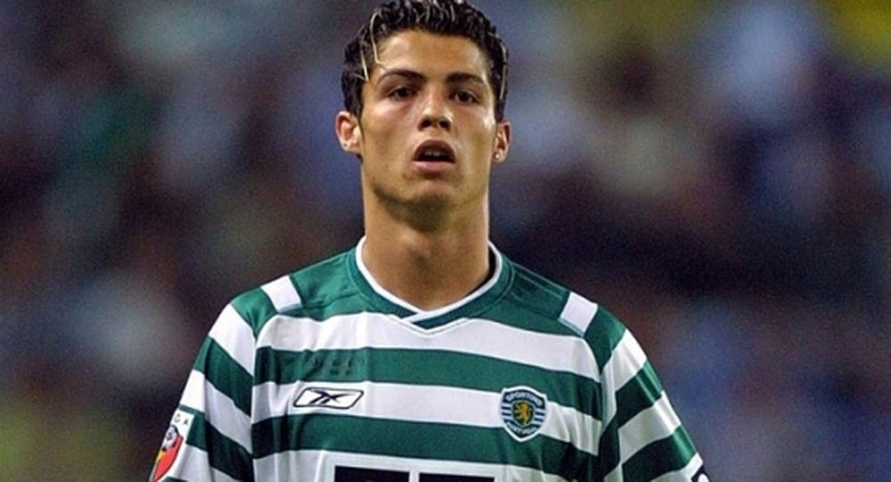

Career
Cristiano Ronaldo's illustrious career began with his professional debut for Sporting Lisbon in Portugal. His exceptional performances soon caught the attention of Manchester United, one of the most successful clubs in English football.
Ronaldo joined Manchester United in 2003 and quickly established himself as a key player. He contributed significantly to the club's success, winning three English Premier League titles and the UEFA Champions League during his time at Old Trafford. Ronaldo's performances earned him numerous individual accolades, including his first FIFA Ballon d'Or award in 2008.
In 2009, Ronaldo made a high-profile transfer to Real Madrid, becoming the most expensive player at that time. He continued to shine at the Spanish club, setting numerous records and winning numerous domestic and international titles. During his nine-year spell at Real Madrid, Ronaldo played a pivotal role in the club's triumph in four UEFA Champions League campaigns, helping them establish a dynasty in European football.
In 2018, Ronaldo transferred to Juventus in Italy, where he showcased his exceptional skills and goal-scoring ability in Serie A. He made an immediate impact, leading the club to consecutive league titles and becoming an integral part of the team.
In 2021, Ronaldo made a return to Manchester United, marking a highly anticipated comeback to the club that launched his career. His return was met with excitement and he continued to contribute to the team's success.
Throughout his career, Ronaldo has achieved remarkable feats, including winning multiple domestic league titles, cup competitions, and individual awards. He has consistently displayed his incredible athleticism, goal-scoring prowess, and ability to perform under pressure, solidifying his status as one of the greatest footballers of all time.